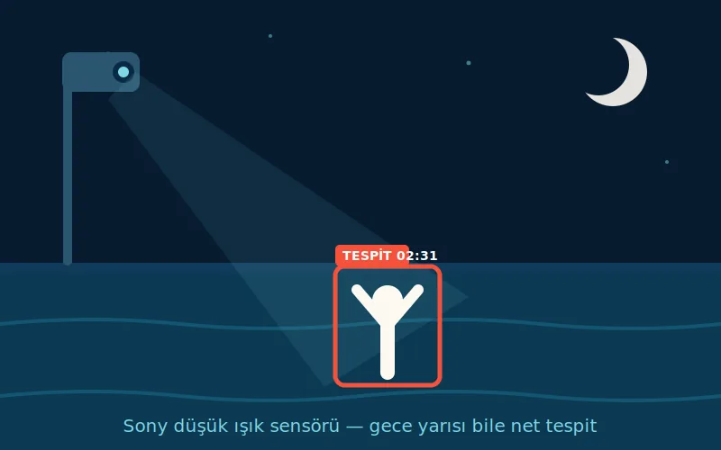
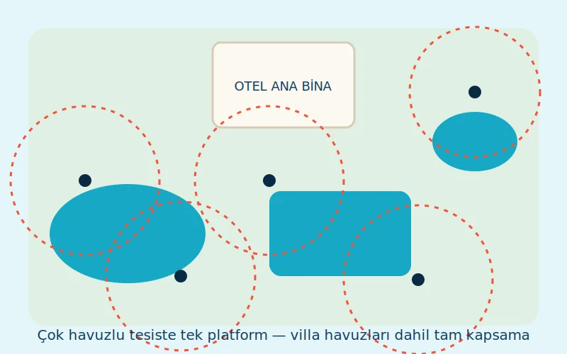
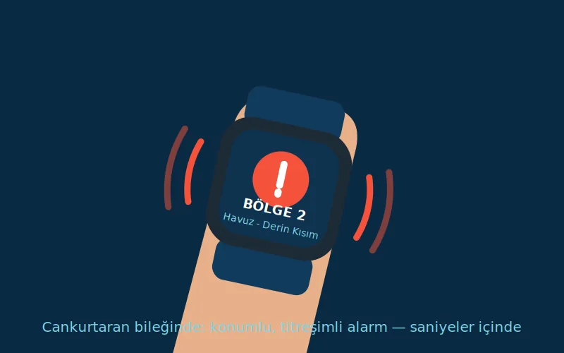

Gözetim boşluğu
Vakaların neredeyse tamamında çocuk, ebeveynin birkaç dakika uzaklaştığı ya da kalabalıkta gözden kaybolduğu anda suya girdi. Çevredeki tatilciler çoğu olayda durumu fark etmedi.
Cankurtaranınıza yorulmayan bir ikinci göz.
Akıllı kameralar havuzunuzu 7/24 izler. Suda riskli bir durum algılandığında cankurtaranınızın akıllı saatine "nerede" bilgisiyle birlikte saniyeler içinde alarm gider. Sistem cankurtaranın yerine geçmez — ona her saniye yardım eder.
ISO 20380 uyumlu teknoloji · Görüntüler tesisinizden dışarı çıkmaz (KVKK)

Kalabalık bir havuzdan gerçek tespit kaydı: yapay zekâ her yüzücüyü ayrı bir kutuyla işaretler, davranışını sürekli puanlar. Risk eşiği aşıldığında cankurtaranın akıllı saatine anında konumlu alarm gider.

Havuzunuza konumlandırılan kameralar havuz yüzeyinin tamamını kesintisiz izler. Mevcut havuzlara, havuzu boşaltmadan kurulum mümkündür.

Sistem her yüzücüyü ayrı ayrı takip eder; hareketsizlik, dikey batış pozisyonu ve panik hareketleri gibi risk işaretlerini gerçek zamanlı analiz eder. Tüm görüntü işleme, tesis içindeki yerel sunucuda yapılır.

Risk algılandığında cankurtaranların akıllı saatlerine titreşimli uyarı, havuz başına sesli-ışıklı alarm ve kontrol paneline olayın konum görüntüsü iletilir. Cankurtaran nereye bakacağını değil, nereye atlayacağını bilir.
Bu sistem cankurtaranın alternatifi değildir. Zorunlu cankurtaran sayınız değişmez — sistem, insan gözünün göremediği anları kapatır.
| Cankurtaran | AI Destek Katmanı | |
|---|---|---|
| Suya atlar, müdahale eder, hayat kurtarır | ✔ Evet — kurtarmayı her zaman insan yapar | ✖ Hayır — yalnızca alarm verir |
| İlk yardım uygular, misafirle ilgilenir | ✔ Evet | ✖ Hayır |
| Hiç yorulmadan, mola vermeden izler | İnsan gözünün fizyolojik sınırları vardır | ✔ 7/24 kesintisiz |
| Su yüzeyindeki parlama ve yansımadan etkilenir | Etkilenebilir | ✔ Görüntü işleme ile etkisi azaltılır |
| Havuzun tamamını aynı anda izler | Tek noktadan bakar | ✔ Tüm yüzeyi aynı anda tarar |
| Her uyarıyı kayıt ve rapor olarak saklar | Hayır | ✔ Evet — denetlenebilir kayıt |
Sistem cankurtaranın yerine geçmez; ona nereye bakacağını söyler. Mevzuattaki cankurtaran bulundurma yükümlülüğü aynen devam eder.
Gerçek bir boğulma çoğu zaman çırpınma ve bağırma olmadan, 20-60 saniye içinde gerçekleşir. Kalabalık bir otel havuzunda bu, en dikkatli cankurtaranın bile gözünden kaçabilecek kadar kısa ve sessiz bir andır.
Basın taramalarına dayanan akademik bir incelemeye göre 2011–2016 arasında Türkiye'deki yüzme havuzlarında 96 kişi hayatını kaybetti. Vakalar Haziran–Temmuz aylarında yoğunlaşıyor ve mağdurların büyük bölümü çocuk.
Vakaların neredeyse tamamında çocuk, ebeveynin birkaç dakika uzaklaştığı ya da kalabalıkta gözden kaybolduğu anda suya girdi. Çevredeki tatilciler çoğu olayda durumu fark etmedi.
Mevzuat havuz metrekaresine ve kaydırak giriş-çıkışlarına göre zorunlu cankurtaran sayısı tanımlar. Vakalarda eksik personel, vardiya/öğle arası boşluğu ve kör nokta takibinin yapılmaması öne çıkan iddialar.
2026'daki dört yaşındaki çocuğun ölümü yetişkin havuzunda gerçekleşti. Çocuk ve yetişkin havuzu arasında fiziksel ayrım, bariyer ve giriş kontrolü olmaması tekrar eden bir risk faktörü.
Adli süreçlerde sorumluluk cankurtaranla sınırlı kalmıyor; genel müdür, güvenlik müdürü ve iş güvenliği uzmanı da tutuklanıyor veya kusurlu bulunuyor. Taksirle ölüme neden olma isnadı standart hâle geldi.
Yapay zekâ katmanı gözetim boşluğunu ve kör noktaları hedefler: vardiya değişiminde, öğle arasında ve kalabalık saatlerde havuz yüzeyi kesintisiz taranır, risk anında cankurtaranın saatine konumlu uyarı gider. Cankurtaranın yerine geçmez; zorunlu personel sayısını da azaltmaz — insan gözünün fizyolojik sınırını kapatır ve her uyarıyı denetlenebilir kayda dönüştürür.
Veriler kamuya açık basın kaynaklarından (Anadolu Ajansı, DHA, İHA servisli ulusal ve yerel yayınlar) ve DergiPark'ta yayımlanan 2011–2016 dönemi yüzme havuzu boğulma vakaları incelemesinden derlenmiştir. Devam eden soruşturmalarda masumiyet karinesi geçerlidir; tesis ve kişi adlarına yer verilmemiştir.
Havuzda yaşanan ölümlü tek bir vaka, bir otel için yalnızca o güne ait bir kriz değildir:
Hiçbir teknoloji tüm vakaları tespit etmeyi garanti edemez. Ancak kesintisiz izleyen, her uyarıyı kayda geçiren ek bir gözetim katmanı; hem riskin kendisini hem de "makul önlemler alındı mı?" sorusunun cevabını yönetmeye yardımcı olur. Aylık hizmet bedeli, bu tablodaki kalemlerin yanında küçük kalır.

Işığa duyarlı sensör gece yarısı bile net tespit sağlar; gece kullanımına açık havuzlarda aydınlatma değerlendirmesi keşifte yapılır.

Ana havuzdan villa havuzlarına kadar tüm noktalar tek merkezî platformda izlenir; kamera yerleşim projesi her tesise özel hazırlanır.

Risk algılandığında cankurtaranın bileğine bölge bilgisiyle titreşimli uyarı düşer — nereye bakacağını değil, nereye atlayacağını bilir.
Serbest yüzme, yüzme dersi ve yoğun saatler için ayrı izleme modları vardır; sistem gün içinde bunlara kendiliğinden geçer. Ders sırasındaki normal hareketlerin boş alarma dönüşmesi böylece en aza iner.
Havuza kaç kişi girdi, hangi saatte hangi uyarı verildi: hepsi günlük rapor olarak yönetim panelinize düşer. Güvenlik performansınızı sayılarla gösterebilirsiniz.
Misafir güvenliği itibardır — ve misafirin gördüğü, anlattığı bir standarttır. Ailelerin tatil tercihinde havuz güvenliği görünür bir kriterdir; belgeli, doğrulanabilir bir güvenlik katmanı misafir iletişiminizde ve acente görüşmelerinizde somut olarak anlatabileceğiniz bir farktır. Puan garantisi vermiyoruz — puanı misafirleriniz verir; biz o deneyimin güvenlik ayağını güçlendiririz.

Sistem, sigorta ve risk yönetimi süreçlerinize belgelenebilir bir güvenlik katmanı ekler; her uyarı kayıt altına alınır.

Kaydırak inişleri, dalga havuzları ve yoğun çocuk trafiği — insan gözünün en çok zorlandığı yerde sistem hiç yorulmaz.

Yüksek ziyaretçi sirkülasyonu olan tesislerde denetim ve raporlama kolaylığı; toplu kullanımda ölçülebilir güvenlik standardı.
Gespa Enerji, Antalya merkezli enerji teknolojileri firmasıdır. Otellere güneş enerjisi ve ısıtma çözümleri sunan ekibimiz, şimdi aynı mühendislik disiplinini havuz güvenliğine taşıyor. Uluslararası boğulma tespit sistemi üreticileriyle distribütörlük ve yetkili servis süreçlerimiz yürütülmektedir; tüm kurulumlar sertifikalı ekiplerce yapılır ve yerinde kabul testleriyle teslim edilir.

Kullandığımız sistem, üç kıtada otellerden olimpik merkezlere kadar farklı ölçeklerde tesiste kuruludur.
Kurulum yapılan tesisler arasında uluslararası 5 yıldızlı otel zincirlerine ait şehir ve resort otelleri, olimpik yüzme merkezleri, aquaparklar, okullar ve rezidans havuzları bulunmaktadır.
Belirtilen kurulumlar teknoloji ortağımızın küresel referanslarıdır; Türkiye kurulumları, keşiften servise Gespa Enerji tarafından gerçekleştirilir. Marka adları, ilgili tesislerin yazılı izniyle yayımlanır.
Sistem donanımı akredite laboratuvarlarda test edilmiştir. Aşağıdaki belge numaralarıyla raporların kaynağı doğrulanabilir.
Cihazın Avrupa güvenlik kurallarına uygun olduğunu gösteren zorunlu belge.
Belge No: CTW2510004501 · Test Lab: CNAS akredite (L1225), ILAC-MRA üyesiCihazın yaydığı elektromanyetik alanın insan sağlığı için güvenli sınırlarda olduğunu gösterir.
Rapor No: CHTW25100048 · Sonuç: Geçti (Pass)Cihazın elektriksel olarak güvenli olduğunu gösteren test.
Rapor No: CHTE25100104Havuzlarda kamerayla boğulma tespitinin uluslararası standardı. Bu standart da sistemi cankurtarana destek olarak tanımlar — yerine geçen bir çözüm olarak değil.
Uyumlu teknolojiGörüntüler tesis içindeki yerel sunucuda işlenir; buluta veya yurt dışına aktarılmaz.
Aydınlatma metni ve kayıt politikası kurulumla birlikte teslim edilirBelgelerin kopyaları talep üzerine kurumsal olarak paylaşılır.
Bir olay sonrası sorulan ilk soru şudur: "İşletme makul önlemleri almış mıydı ve bunu ispatlayabiliyor mu?" Sistem, bu sorunun cevabına dayanak olabilecek kayıtları her gün otomatik olarak üretir:
Bu kayıt düzeni; adli veya idari bir süreçte özen yükümlülüğünüzün belgelenmesine katkı sağlar, iç denetim ve zincir standartlarınıza ölçülebilir bir güvenlik göstergesi ekler.
Poliçe yenileme görüşmelerinde risk yönetimi dosyanıza ekleyebileceğiniz somut bir önlem ve kayıt setidir. Prim ve teminat koşulları sigorta şirketinizin takdirindedir; biz görüşmede kullanacağınız belgeleri sağlarız.
İki seçenek var:
Hangisi tesisinize uygun? Ücretsiz keşif sonrası iki seçeneği de yazılı teklif olarak sunarız.
Hayır — ve geçmemeli. Uluslararası ISO 20380 standardı da bu sistemleri cankurtaranı destekleyen ikincil gözetim katmanı olarak tanımlar. Sistem, cankurtaranınızın görüş alanını ve tepki hızını büyütür.
Hayır. Cankurtaran sayısı ve nitelikleri ilgili mevzuatla belirlenir; sistem bu yükümlülüğü azaltmaz ve ortadan kaldırmaz. ISO 20380 de bu teknolojiyi cankurtaranı destekleyen ikincil gözetim katmanı olarak tanımlar. Sistemin katkısı personel tasarrufu değildir: mevcut kadronuzun görüş alanını havuzun tamamına genişletir, risk anında konum bilgisini saniyeler içinde iletir ve her uyarıyı denetimlerde gösterilebilir kayda dönüştürür.
Evet. Çoğu projede kurulum havuz boşaltılmadan ve işletme kapatılmadan yapılabilir; kablolama ve montaj çalışmaları havuzun kullanıma kapalı olduğu saatlere planlanabilir. Toplam süre havuz sayısına ve mevcut altyapıya göre değişir; kesin takvim, ücretsiz keşif sonrasında yazılı teklifle birlikte taahhüt edilir. Kurulumun ardından sistem tesisinize özel kalibre edilir ve cankurtaran ekibinize yerinde kullanım eğitimi verilir. Sezon ortasında başlamak istemeyen tesisler, bir sonraki sezonun kurulum kontenjanını şimdiden ayırtabilir.
Standart güvenlik kameraları genel gözetim için tasarlanmıştır; su yüzeyindeki yansıma, parlama ve bakış açısı sorunları nedeniyle boğulma tespiti için genellikle yeterli değildir. Sistem, bu iş için tasarlanmış kendi kameralarıyla çalışır. Bununla birlikte tesisinizdeki mevcut kablolama, ağ ve kayıt altyapısı ücretsiz keşifte değerlendirilir; uygun bölümler yeniden kullanılabilir ve bu, kurulum süresini ve maliyetini azaltabilir.
Kamera sayısı havuzun yüzey alanına, şekline, derinlik bölgelerine ve kör noktalara göre projelendirilir; hedef, havuz yüzeyinin tamamının kesintisiz kapsanmasıdır. Tek ve düzgün biçimli bir havuzda az sayıda kamera yeterli olabilirken, kaydıraklı veya bölünmüş havuzlarda kapsama planı büyür. Kesin adet ve yerleşim, ücretsiz keşifte hazırlanan kapsama krokisiyle birlikte yazılı teklifte sunulur.
Hiçbir sistem sıfır yanlış alarm vaat edemez; kaliteli sistemler bunu günde birkaç uyarı seviyesinde tutacak şekilde tasarlanır ve her tesiste kalibre edilir. Her uyarı, kayıt ve rapor olarak saklanır.
Görüntüler tesis içindeki sunucuda işlenir, buluta veya yurt dışına aktarılmaz. Kayıt politikası KVKK'ya uygun şekilde, yalnızca olay anlarını saklayacak biçimde yapılandırılır ve tesis girişlerinde aydınlatma metni yer alır.
Kurulumla birlikte havuz alanına özel aydınlatma metni ve kayıt saklama politikası şablonları teslim edilir; tesise düşen başlıca adım, bu metinlerin girişlerde görünür şekilde yer alması ve tesisin mevcut KVKK dokümantasyonuna eklenmesidir. Kameralar yalnızca havuz ve çevresini görecek şekilde projelendirilir; soyunma kabini, duş ve benzeri mahrem alanlar kapsama dışında tutulur. Görüntüler tesis içindeki yerel sunucuda işlenir, buluta veya yurt dışına aktarılmaz. Nihai hukuki değerlendirme için metinleri kendi KVKK danışmanınıza da onaylatmanızı öneririz.
Fiyat üç ana kalemden oluşur: kapsama planına göre kamera sayısı, tesis içi yapay zekâ sunucusu ile alarm birimleri (akıllı saatler, sesli-ışıklı uyarı) ve kurulum-kalibrasyon işçiliği. Havuz sayısı ve boyutu her tesiste farklı olduğundan tek bir liste fiyatı yerine, ücretsiz keşif sonrası kapsama krokisiyle birlikte yazılı teklif sunarız. Ödemeyi tek seferlik anahtar teslim yatırım olarak ya da donanım, yazılım, bakım ve desteğin tek pakette toplandığı Aylık Güvenlik Hizmeti modeliyle yapabilirsiniz: aylık 299 USD'den başlayan planlar, 36 aya varan seçenekler.
Evet. Kurulum bedeli sonrası aylık sabit hizmet planları sunuyoruz; donanım, yazılım, bakım ve destek tek pakette. Aylık 299 USD'den başlayan planlarla, 36 aya varan ödeme seçenekleri mevcuttur.
CE/RED test raporlarımız akredite laboratuvar numaralıdır; belge numaraları bu sayfadaki Belgelendirme bölümünde açıkça yer alır. Rapor kopyaları kurumsal talep üzerine e-postayla paylaşılır.
Formu doldurun; ekibimiz 1 iş günü içinde sizi arasın.
Önemli bilgilendirme: AI Cankurtaran Destek Sistemi, cankurtaran gözetiminin yerine geçmez; onu destekleyen ek bir güvenlik katmanıdır. Hiçbir teknolojik sistem tüm boğulma vakalarını tespit etmeyi garanti edemez. Sistem, ilgili mevzuat kapsamındaki cankurtaran bulundurma yükümlülüklerini ortadan kaldırmaz. Ürün özellikleri, kurulan sistem konfigürasyonuna göre değişiklik gösterebilir.